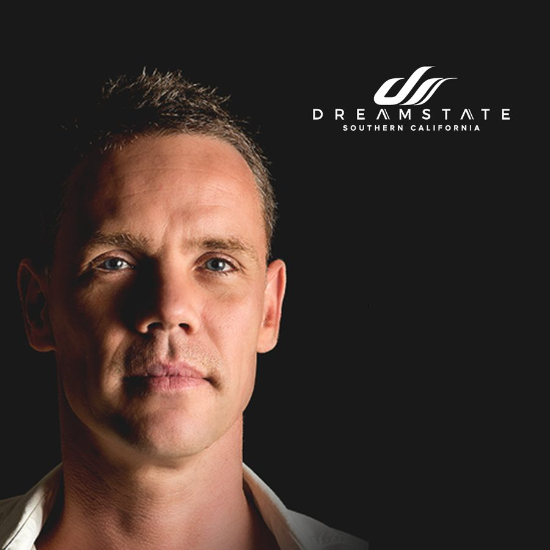

RAM Isn’t Pulling Any Punches With His Dreamstate SoCal 2018 Mix


It’s been a decade now since RAM burst into the picture as one of the brash new stars of the euphoric trance scene. While in the periphery, he’d already dominated the hard trance scene throughout the 2000s as one half of the infamous Bas & Ram duo. Upon launching his solo RAM alias in 2009, he quickly showed he was a force to be reckoned with as he busted through with his breakthrough single “RAMsterdam,” an effort declared the “best track of the year” by Armin van Buuren himself, no less.
Long-term fans of RAM will know that it’s been an emotional journey for the DJ/producer over the past decade—captured above all else by his 2013 single “RAMelia,” inspired by his own personal tragedies. An emotional and beloved effort, it was embraced as an instant classic by the #trancefamily and became one of the biggest trance tracks of the year, holding the Beatport #1 for a month and winning the #2 Tune of the Year on Armin’s A State of Trance radio show. Five years later, and it is full speed ahead for RAM.
“My 2018 highlights? It’s been more #1 tracks, and another year of doing things better, bigger and bolder,” he says. “I’ve played amazing tours and festivals, and met amazing people. If you’re doing what you love, everything is a highlight. I also had my Grotesque worldwide tour, so things really went great.”
If you’re not familiar with the mysterious Grotesque that he’s referring to, it’s the RAM events brand he launched all the way back in 2009 alongside his debut RAM production, which regularly hosts stages at trance parties, and this year grew outside its Netherlands origins for a bona-fide world tour (and is also due to come full circle next month as it returns to the Netherlands for its annual Grotesque Indoor Festival).
Otherwise, the trademark RAM brash confidence is also on full display. When asked what upcoming trance underdogs he thinks we should be watching out for, he names his own new project that’s in the works, ‘RAM pres RAW’ (expect more news from that soon). When similarly asked about his favorite trance track of the year, he nominates his own RAM and Susana single, “Northern Star.”
“This is just the essence of what trance means for me,” he says. “It’s a journey of emotions!”
It’s not surprising that RAM knows where he stands. After all, with a presence in dance culture that stretches back to his Bas & Ram days at the turn of the millennium, by now, he knows who he is and what he stands for. He’s not afraid to fully embrace his RAM identity as he takes his music to the world.
“I think for every artist it’s the same, really,” he says. “It’s about bringing your genuine feelings, capturing your personality, and then putting it into your music. You can’t be different when you’re a copycat. Being who I am with my music is what I love the most, and it’s what sets me apart from others. I take you with me on my journey, and whether or not you love it or hate it, this is entirely up to you.”
To a degree, you get the impression the RAM work ethic squeezes out the chance to really enjoy things just as a punter. He confirms it’s not often he’s able to enjoy a night out on the other side of the decks.
“I don’t even remember the last time I was able to do this; it’s already been so long, the party itself is always work,” he confirms. “I can’t really enjoy a segregated evening, as when I’m at events I am plugged into everything. It’s just automatic, I can’t help it,” he laughs. “When I’m not touring, it’s always great to eat and drink with my friends, or have some quality time with my son.”
Otherwise, what’s exciting him the most about the trance scene at the moment?
“In some areas, trance is picking up, which is always nice to see and also think it’s time for an evolution, music-wise. My contribution to that is my new project RAW, which is more on the more harder / tech / raw side of things, instead of my melodic and vocal sound. This will be a project to take things outside the box and do what I would not normally do in my emotional tracks. I don’t want to follow the trance clichés that I think are too much there at the moment, so taking new steps towards that for me exciting.”
When we steer the conversation in a somewhat more serious direction, RAM is more than willing to follow. When asked if there was ever a DJ set that changed his life, he points to the period of time when the aforementioned “RAMelia” was released; which came in the wake of his wife sadly passing away.
“The set I did as a tribute for my wife after she passed away was the most difficult, but also the most beautiful, and to see all the people paying their respects was truly emotional and special.”
Looking forward, RAM says he’s particularly hyped for Dreamstate SoCal this weekend. He sends a special shout-out to the fans who are showing up to represent in a few days, and he’s even put together an extra-special mix to give them an idea what they can expect, and what he’s got in store.
“Dreamstate is an absolute must-have on your bucketlist,” he says. “I love the vibe of the show, and it’s great to see these shows happening in the US. I hope the scene develops even more in the years to come. Both me and Arctic Moon will be bringing lots of tracks to world premiere, as well as our new collab with Denise Rivera. So, I guess you’ll be able to enjoy the best of both worlds, as we’ll be taking you on a journey where you can scream, jump, fly and cry.”
RAM is playing at Dreamstate SoCal 2018, which takes place Thanksgiving weekend—Friday, November 23, and Saturday, November 24—at NOS Events Center in San Bernardino, CA. Tickets are on sale now. For more information, visit the official website.
Follow RAM on Facebook | Twitter | SoundCloud
Follow Dreamstate on Facebook | Twitter | Instagram